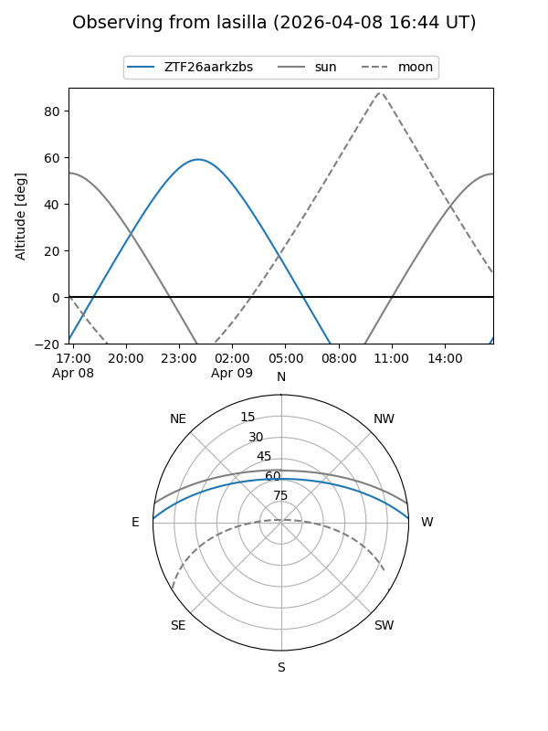
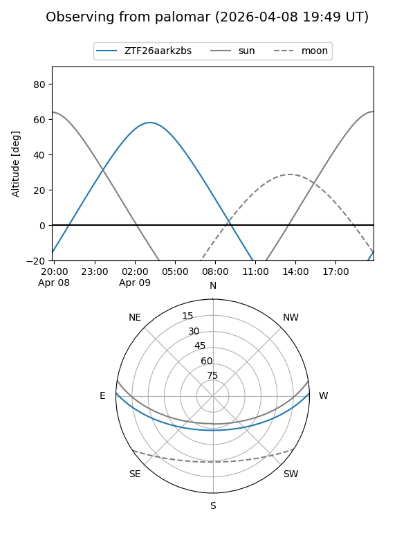

ZTF26aarkzbs
Target ZTF26aarkzbs at 2026-04-09 06:31
Aliases and brokers:
FINK: link
Lasair: link
ALeRCE: link
alt names
ZTF26aarkzbs (ztf,fink_ztf)
Coordinates:
equatorial (ra, dec) = 127.3447,+1.65731
equatorial (HMS+DMS) = 08:29:22.74,+01:39:26.30
galactic (l, b) = (223.1008,+22.45124)
Flags:
Photometry:
last ztfg=20.05
1 ztfg detections
Lightcurve
Visibility


Additional plots